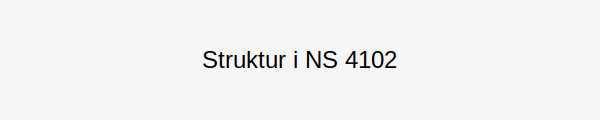
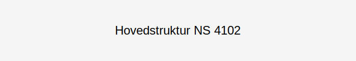

NS 4102 er den norske standardkontoplanen utviklet for kommuner og fylkeskommuner. Den gir en felles struktur for regnskapsføring og muliggjør sammenlignbarhet mellom offentlige enheter. NS 4102 er sentral for kommunal regnskapsføring og integreres i regnskapsrutiner for å sikre konsistens, transparens og etterlevelse av gjeldende regler.

Historisk Utvikling
NS 4102 ble første gang publisert i 1993 av Standard Norge for å etablere en felles kontoplan for kommuner. Den ble revidert i 2004 og 2014 for å tilpasse seg nye krav til rapportering og digitalisering.
| Årstall | Hendelse |
|---|---|
| 1993 | Første utgave av NS 4102 publisert |
| 2004 | Revidert utgave med nye kontonummer |
| 2014 | Oppdatert for digitalisering og nye krav til internkontroll |
| 2020 | Utvidet med kontospesifikasjoner for prosjektregnskap |
Hovedstruktur og Kontoklasser
NS 4102 er organisert i følgende hovedklasser:
| Klasse | Formål | Kontonummer |
|---|---|---|
| 1 | Eiendeler | 1000–1999 |
| 2 | Egenkapital og gjeld | 2000–2999 |
| 3 | Driftsinntekter | 3000–3999 |
| 4 | Driftskostnader | 4000–4999 |
| 5 | Finansinntekter og -kostnader | 5000–5999 |
| 6 | Utlån og avsetninger | 6000–6999 |
| 7 | Tilleggsinformasjon | 7000–7999 |

Implementering i Kommunal Regnskapsføring
Profesjonell implementering av NS 4102 innebærer:
- Kartlegging av eksisterende kontoplan
- Mapping av kontoer til NS 4102-strukturen
- Tilpasning for lokale behov (prosjekt- og investeringsregnskap)
- Integrasjon med ERP- og fakturaprogram
- Involvering av økonomipersonell og revisor
Tilpasning og Lokale Varianter
Det er vanlig at kommuner legger til lokale konti:
| Type | Beskrivelse | Eksempel |
|---|---|---|
| Prosjektregnskap | Sporer prosjektrelaterte kostnader | 6100 – Prosjekt A |
| Investeringsregnskap | Separate kontoer for investeringer | 6200 – Investering Anlegg |
| Internsalg | Interne overføringer og kostnadsdeling | 6300 – Internkjøp |
Sammenheng med Generelle Kontoplaner
NS 4102 er spesielt utformet for kommunal sektor, men henger sammen med generell kontoplan, slik at:
- Økonomisystemer kan standardisere rapportering
- Data kan sammenstilles på tvers av sektorer
- Kommunale regnskap kan analyseres i bærekraftsrapportering
Verktøy og Ressurser
Tilgjengelige ressurser for NS 4102:
- Dokumentasjon fra Standard Norge (NS 4102:2014)
- Veiledningsmateriell fra Kommunal- og moderniseringsdepartementet
- Regnskapsprogrammer med støtte for NS 4102
Konklusjon
NS 4102 er et grunnleggende rammeverk for kommunal regnskapsføring og sikrer felles struktur og etterlevelse. Ved riktig implementering og løpende internkontroll bidrar NS 4102 til mer effektiv, sammenlignbar og transparent regnskapsrapportering i kommunal sektor.